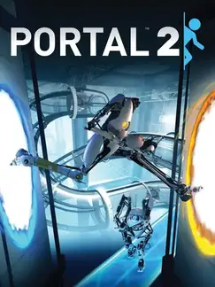

 |
|
| Tiempo de juego | No Jugado |
| Última actividad | Nunca |
| Añadido | 17/11/2025 18:06:02 |
| Modificado | 21/11/2025 14:15:22 |
| Estado de finalización | Not Played |
| Librería | Playnite |
| Fuente | |
| Plataforma | PC (Windows) |
| Fecha de lanzamiento | 18/4/2011 |
| Puntuación de la Comunidad | 92 |
| Puntuación de la Crítica | 92 |
| Puntuación de usuario | |
| Género | Adventure Puzzle |
| Desarrollador | Valve |
| Editor | Electronic Arts Valve |
| Característica | Co-Operative Multiplayer Single Player Split Screen |
| Enlaces | Steam |
| Tag | |
¿Cómo hacés una secuela de un juego que era una joya perfecta y concisa? Valve nos dio la respuesta en 2011: lo hacés más grande, más gracioso y todavía más inteligente. "Portal 2" es la expansión de una idea genial a una obra maestra completa, uno de los pocos juegos que se pueden considerar perfectos.
La historia te vuelve a meter en las ruinas de Aperture Science, pero esta vez el lugar se siente enorme y con una historia que se expande por décadas. A la psicópata de GLaDOS se le suman dos de los mejores personajes de la historia de los videojuegos: el núcleo de personalidad idiota y adorable, Wheatley, y el fundador de Aperture, el zarpado de Cave Johnson. El guion es una de las cosas más graciosas e inteligentes que se han escrito jamás.
La jugabilidad agarra la pistola de portales y le suma una caja de juguetes nuevos para romperte la cabeza. Tenés geles que te hacen correr más rápido o saltar más alto, puentes de luz, rayos tractores y lásers. Cada puzzle es una sinfonía de lógica y física que te hace sentir un verdadero genio cuando finalmente lo resolvés.
Y por si la campaña de un jugador no fuera suficiente, el juego trae un modo cooperativo que es una historia aparte y completamente distinta. Jugás con un amigo, cada uno como un robot con su propia pistola de portales (cuatro portales en total), y tenés que resolver puzzles diseñados específicamente para la cooperación. Es la prueba de fuego definitiva para cualquier amistad y una de las mejores experiencias cooperativas que existen.
"Portal 2" es un triunfo absoluto del diseño de videojuegos. Es ingenioso, es desopilante y es increíblemente satisfactorio de principio a fin. Es una de esas raras joyas que no tiene un solo gramo de grasa, donde cada puzzle, cada línea de diálogo y cada idea está en el lugar perfecto. Una obra cumbre.
Hay que comprar el juego, que vale cada uno de sus 5 dolares